I will explain.
For that you need
to know certain
things.
Have you also had similar doubts?
Let's do some activities.
Take a pivoted magnetic needle. Bring a piece of wood
near to it.
• What do you observe?
The magnetic needle (deflects / doesn’t deflect)
• Bring a bar magnet near the magnetic needle instead
of the wooden piece. What do you observe?
• What is the reason?
Isn't the magnetic needle deflected because of the attraction and
repulsion between the two magnetic poles?
PhET→ Magnets
and Compass
You have now understood that if another magnetic field is created
near the magnetic needle, the magnetic needle will deflect.
Don’t you know that there is a magnetic field around a magnet?
There are many magnetic field lines (flux lines) within a magnetic
field. These imaginary lines are used only to visualise the magnetic
field.
• Using a magnetic compass, draw the magnetic flux lines around a
bar magnet in your science diary.
Compare your drawing with the given figure.
• What is the direction of the magnetic flux lines surrounding
a magnet?
• What is its direction inside the magnet?
Fig. 4.3
Can we create a magnetic field without
using permanent magnets?
Current Carrying Conductor and Magnetic
Field
Fig. 4.4
Make a circuit as shown in figure 4.4 using a conducting rod,
connecting wires, a 9 V cell and a bell switch. Bring it near a
pivoted magnetic needle.
• When the bell switch is off, what is the direction of the
magnetic needle?
• Now turn on the bell switch. What do you observe?
• Why did the magnetic needle deflect now?
Now we can understand that a magnetic field is formed
around a current carrying conductor.
A magnetic field is formed around a current carrying conductor. This magnetic
field can exert a force on a magnetic needle. This is the magnetic effect of
electricity.
70
Does the direction of deflection of the magnetic
needle depend on the direction of the current?
Arrange a circuit as shown in figure 4.5 in such a way
that the conducting rod AB is above the pivoted magnetic
needle, parallel and close to it.
• What do you observe when the bell switch is turned on?
• In which direction does the north pole of the magnetic
needle deflect when viewed from above?
(clockwise direction / anticlockwise direction)
Haven’t we learned that a magnetic field can exert
a force on a magnetic needle? In the previous
experiment, the force necessary to move the
magnetic needle is created by the magnetic fields.
Isn’t this magnetic field due to the current passing
Clockwise
through the conductor?
Reverse the direction of the current. Now isn’t
the magnetic needle deflecting in the opposite
direction?
Fig. 4.5
Anticlockwise
direction
direction
The clockwise direction is the direction
in which the hands of a clock move.
The anticlockwise direction is the
direction opposite to it.
• What could be the reason? Write down your
inference.
Isn’t this because the direction of the magnetic field around the
conductor has reversed?
• In figure 4.5, which direction does the north
pole of the magnetic needle deflect, when
the current is from A to B?
(clockwise direction / anticlockwise
Hans Christian Oersted
direction)
Lifetime : 1777-1851
Birthplace : Denmark
• What is the direction, if the current is from
B to A?
Hans Christian Oersted was a Danish
scientist. In 1820 he conducted an experiment
(clockwise direction / anticlockwise
that demonstrated the relationship between
direction)
electricity and magnetism. These experiments
Repeat the experiment by placing the conductor laid the foundation for advancements in the
below the magnetic needle.
field of electricity. The CGS unit of intensity
• When the current is from A to B, in which of the magnetic field is named oersted in
honour of him.
direction does the north pole of the magnetic
needle deflect?
71
(clockwise direction / anticlockwise direction)
• What is the direction, if the current is from B to A?
(clockwise direction / anticlockwise direction)
Through this experiment, the scientist Hans Christian Oersted
discovered that a magnetic field is formed around a current carrying
conductor.
Can we find out the direction of the magnetic field
around a current carrying conductor?
Let's do an experiment to understand the relationship between the
direction of the current and the deflection of the magnetic needle.
Pass a copper wire through a cardboard and arrange it
perpendicular to the surface of the cardboard as shown
in the figure.
Fig. 4.6
Connect the copper wire in series with a 9V battery and
a bell switch. Arrange small magnetic compasses in a
circular shape around the copper wire on the cardboard
as shown in the figure. Turn on the bell switch. Observe
the direction of deflection of the north pole of the
magnetic needle.
• When the current is from A to B, in which direction does the north
pole of each magnetic needle deflect?
(clockwise / anticlockwise)
Observing the magnetic compasses mark the north poles of the
magnetic needles on the cardboard.
After removing the magnetic compasses from the cardboard, draw
the magnetic field lines and mark their direction.
• What is the direction of the magnetic field now?
(clockwise / anticlockwise)
Now, imagine holding the current carrying conductor AB with your
right hand so that your thumb points in the direction of the current.
Fig. 4.7
72
• Compare the direction indicated by the tips of your fingers curling
around the conductor with the direction of the magnetic field.
Aren’t they the same? Write down your findings in the science
diary.
This method of finding the direction of the magnetic
field around a current carrying conductor is known
as the right hand thumb rule.
Right Hand Thumb Rule
Imagine holding a conductor with your right
hand in such a way that the thumb points in
the direction of the electric current, the fingers
curled around the conductor will indicate the
direction of the magnetic field.
Let's do another activity (Fig. 4.8).
Make two holes in a cardboard. Pass a copper wire
through these holes and make a loop. Arrange half
of the loop above the cardboard and half below as
shown in the figure. Place magnetic compasses near
the holes through which the copper wire passes.
Connect the loop of wire to a battery and a bell
switch.
Ampere's Swimming Rule
Ampere's swimming rule can also
be used to find the direction of the
magnetic field around a current
carrying conductor. Imagine a
person swimming in the direction
of the electric current, looking at
the magnetic needle, as shown in
the figure. The north pole of the
magnetic needle will deflect towards
the left side of the person.
• Turn on the bell switch. What do you observe?
Find the direction of the magnetic field at points A
and B by observing the magnetic compasses.
• In which direction does the current flow in the
part of the coil that faces you?
(clockwise direction / anticlockwise direction)
Fig. 4.8
• In this case, what is the direction of the flux lines?
(into the coil / out of the coil)
• What happens to the magnetic field if the bell switch is
turned off?
If the current in the coil is clockwise, the direction of the flux lines
will be inward into the coil. If the current is anticlockwise, the
direction of the flux lines will be outward.
Haven't you noticed that there was no magnetic force when there
was no current in the circuit? From this, we can understand that the
magnetic force obtained from the coil is temporary (only when there
is current).
Is there a way to increase the magnetic strength
associated with a coil of wire?
Connect a coil of wire to a battery and a
bell switch. Hold the coil near one end of a
pivoted magnetic needle.
Fig. 4.9
Fig. 4.10
When the number of turns of the conductor
increased, both the magnetic strength and
the magnetic flux increased, but the flux
produced by a single turn of the conductor
did not increase.
• Turn on the bell switch. What do you
observe?
Now increase the number of turns of the
coil and hold it near the magnetic needle.
Pass the same current through it.
• What change do you observe in the
deflection of the magnetic needle?
• What change has occurred in the magnetic
strength?
Then, replace the 1.5 V cell with a 3 V
battery and pass the current.
• Now, has the deflection of the magnetic
needle increased or decreased?
• If so, write down the factors that affect
the strength or intensity of the magnetic
field around a coil of wire.
Number of turns of the conductor
How can we utilize the magnetic effect of electric
current using coils of wire?
74
Solenoid
Take a PVC pipe of length 10 cm and diameter
4 cm (1.5 inch). Wind 2 m insulated copper wire of
gauge 26 around it. Remove the copper coil from the
PVC pipe without deforming the coil. What is the
shape of the coil now? Doesn't it look like a spring
[Fig.4.11(a)]? An insulated conductor wound in a
spiral shape is a solenoid. The centres of all the turns
lie on the same straight line.
Similarly, prepare another solenoid of the same
length as the first one by winding 4 m of insulated
copper wire on the same PVC pipe [Fig. 4.11 (b)].
Fig. 4.11 (a)
Fig. 4.11 (b)
Arrange magnetic compasses around the first
solenoid. Connect the solenoid to a 9 V battery and
a bell switch (Fig. 4.12).
What do you observe when you turn on the bell
switch?
Fig. 4.12
Repeat the experiment using the second solenoid.
• Now, what do you observe? (the deflection
increases / decreases)
• What is the reason?
• Increase the current through the solenoid. What
about the deflection of the magnetic compasses?
(increased / decreased)
Fig. 4.13
• Place a piece of soft iron as the core of the solenoid.
Turn on the bell switch (Fig. 4.13). What do you
observe?
• Place a soft iron core with a larger area of cross
section. Turn on the bell switch. What do you
observe? (Fig. 4.14)
Observe the magnetic compasses at the ends of the
solenoid and determine the polarity at each end.
Current in the clockwise
Current in the
direction
anticlockwise direction
Fig. 4.15
• If the current flows in clockwise direction
at one end of the solenoid, what will be the
polarity at that end?
(south pole / north pole)
• What about the end in which the current is in
anticlockwise direction?
Imagine holding a solenoid with your right hand. When your fingers
curl around in the direction of the current, isn’t your thumb pointing
towards the north pole of that solenoid?
If you hold a current carrying solenoid with your right hand in
such a way that your four fingers curl the coils in the direction
of the current, the thumb points towards the north pole of the
solenoid.
Fig. 4.16
The solenoid utilizes magnetic effect of electricity for practical
purposes.
Based on the activities conducted so far, write down the factors that
influence the magnetic strength of a current carrying solenoid.
• The number of turns of the conductor per unit length.
•
PhET→ Magnets
and Electromagnets
Electromagnets are devices that create magnetic field using
electricity.
Explain how a strong electromagnet can be made.
Are there similarities between the magnetic field
around a bar magnet and that around a current
carrying solenoid?
Sprinkle iron filings on an acrylic sheet placed over a bar magnet
and observe.
Compare it with figure 4.17 (a) and record your inferences in the
science diary.
Now sprinkle iron filings on an acrylic sheet placed on top of a
current carrying solenoid [Fig. 4.17 (b)].
76
• Haven’t you understood that the magnetic field lines around a bar magnet
and a solenoid are alike?
Fig. 4.17 (b)
Fig. 4.17 (a)
Complete table 4.1 by comparing the stability of magnetic field, polarity,
and the possibility of change in magnetic strength etc., of a bar magnet and
a current carrying solenoid.
Bar magnet
Current carrying solenoid
Magnetism is permanent
Magnetic strength can be varied.
Polarity cannot be changed
Table 4.1
• If the strength of the electromagnets is significantly increased,
won’t they attract surrounding magnetic materials strongly?
Observe situations in (Fig. 4.18) where strong magnetic fields are
used.
Cranes using electromagnets
(a)
Maglev train
(b)
MRI scanner
(c)
Electric motor
(d)
Fig. 4.18
77
Page 78
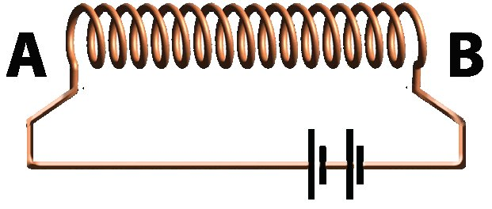
Figure fig_ch04_p078_01 (Page 78)
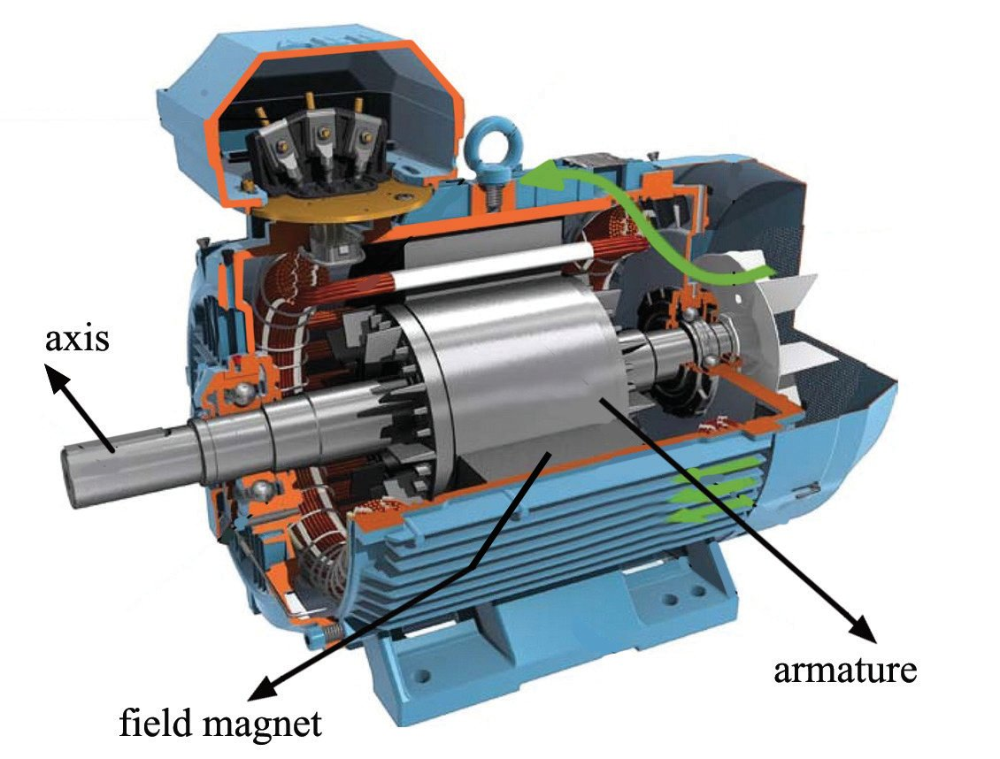
Figure fig_ch04_p078_02 (Page 78)
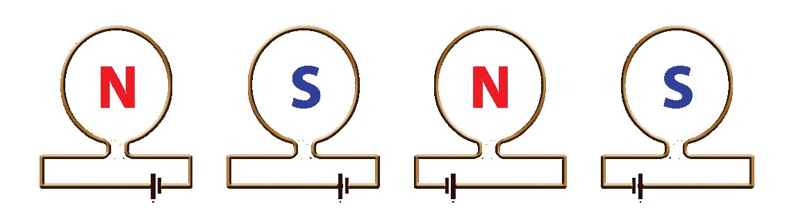
Figure fig_ch04_p078_03 (Page 78)
Physics
Standard- X
Very strong electromagnetic fields are used in MRI (Magnetic
Resonance Imaging) scanning. We know that patients are asked to
remove all ornaments (made of metal) before undergoing an MRI
scan. Since the magnetic field of the MRI scanner is very strong,
magnetic materials are strongly attracted and may cause accidents.
The presence of other metals reduces the accuracy of the scanning
report. Now haven't you understood the indication of the image seen
at the beginning of this unit? If there is a magnetic shielding made of
iron sheets (as in an electric motor), the magnetic flux neither flows
out nor causes any accidents.
The figures of current carrying conducting loops are given
below. Which figures give the correct representation of
the magnetic polarity of the end you are facing?
(a)
(b)
Fig. 4.19
(c)
(d)
Observe figure 4.20.
(a) What is the magnetic polarity of end A?
(b) What is the magnetic polarity of end B?
Fig. 4.20
Electric Motor
Observe figure 4.21. This is a picture of an
electric motor. Don't you see many coils? You
know that a magnetic field is created when
electricity flows through the coils of wire.
How does the motor work when the switch is
turned on?
Let's see how forces are experienced by a
current carrying conductor in a magnetic field.
Fig. 4.21
78
Page 79
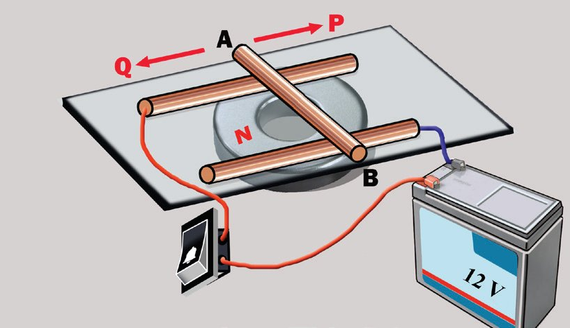
Figure fig_ch04_p079_01 (Page 79)
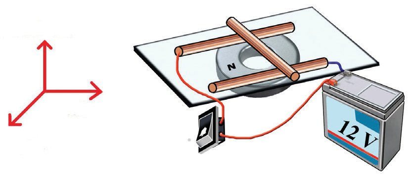
Figure fig_ch04_p079_02 (Page 79)
Magnetic Effect of Electric Current
Place a reasonably sized ring magnet on a table
with the north pole facing upwards. Place a thin
acrylic sheet on top of it. Take two copper wire
pieces of length 20 cm each (gauge 16) with
its insulation removed. Place them parallel to
each other on the sheet above the magnet. Place
another piece of copper wire (AB) across on top of
them as shown in the figure. Connect the positive
Fig. 4.22
terminal of a 12V battery through a bell switch to
one of the parallel copper wires. Connect the end
of the second copper wire to the negative terminal of the battery.
• What do you observe when the switch is turned on?
• Note in which direction the copper wire AB moved.
(towards Q / towards P)
• Repeat the experiment by reversing the polarity of the battery. In which
direction does the copper wire move?
(towards Q / towards P)
• Repeat the experiment by placing the south pole of the magnet facing
upwards. Repeat the experiment by reversing the polarity of the battery.
What do you observe?
• What do you observe if the polarity of the magnet and the direction of the
current are reversed together?
• What could be the reason for the conductor AB moving in the same
direction as before? Write it down in your science diary.
If the direction of the current or the magnetic field is reversed, the
direction of motion of the conductor will be reversed.
If the direction of the current and the magnetic field are reversed
together, the conductor will move in the same direction as before.
What are the factors that influence the direction of the force
experienced by the conductor?
Magnetic field
Direction of electric current
Direction of
force
Direction of
current
Fig. 4.23 (a)
79
Page 80
Figure fig_ch04_p080_01 (Page 80)
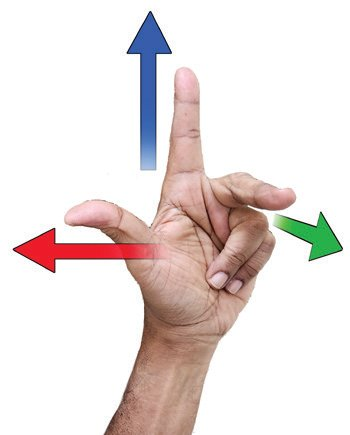
Figure fig_ch04_p080_02 (Page 80)
Physics
Standard- X
Magnetic field
Direction of
current
Direction of
force
Fig. 4.23 (b)
• In this experiment, in which way are the directions of the
electric current and the magnetic field arranged?
(perpendicular to each other / parallel to each other)
Point the first finger of your left hand in the direction of the
magnetic field and the second finger in the direction of the
electric current through the conductor.
• Now, isn't the force experienced by the conductor in the
direction indicated by the thumb?
Didn't you understand that the direction of the magnetic field, the
direction of the electric current, and the direction of motion of the
conductor are mutually perpendicular?
The direction of the force experienced by a current carrying conductor
placed in a magnetic field, the direction of the magnetic field and
the direction of the electric current are mutually perpendicular. This
relationship was discovered by John Ambrose Fleming. Fleming's
left hand rule is useful to find the direction of motion of a conductor
in devices that utilise the magnetic effect of electricity.
Fleming’s Left Hand Rule
Hold the thumb, first finger, and second finger of your left hand perpendicular
to each other. If the First finger points in the direction of the magnetic
field and the seCond finger in the direction of the electric current, then the
thuMb will indicate the direction of the force experienced by the conductor.
While using Fleming's left hand rule to find the direction of motion
of a conductor, it will be easier to first confirm the direction of the
magnetic field with the first finger.
How does an electric motor work?
Let's do some activities to understand the parts and working of an
electric motor. For this, we need cardboard, insulated copper wire,
a 9 V battery, a ring magnet, two safety pins, and a conducting
wire. Wrap the insulated copper wire around a PVC pipe to make a
coil. Make sure that both ends of the coil extend slightly outwards.
Remove the insulation at both ends. Arrange the coil, ring magnet
80
Page 81
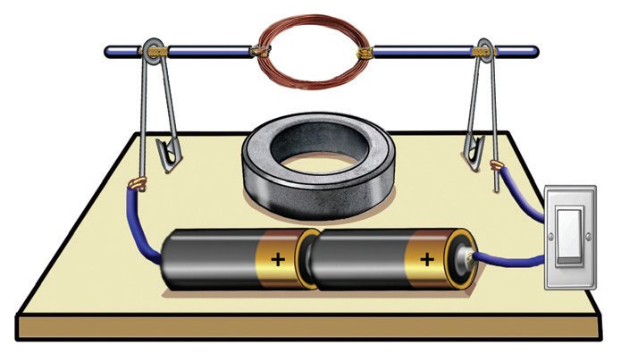
Figure fig_ch04_p081_01 (Page 81)
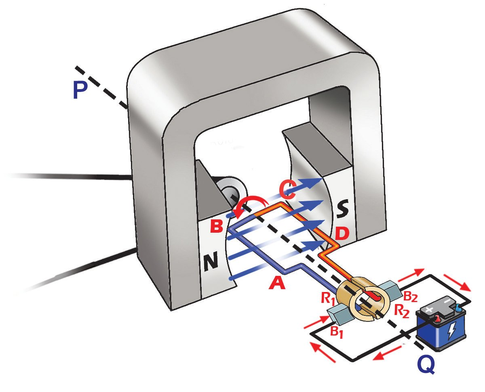
Figure fig_ch04_p081_02 (Page 81)
Magnetic Effect of Electric Current
and battery as shown in figure 4.24. Make sure that
the plane of the coil is parallel to the surface of the
cardboard.
• What do you observe when the switch is turned on?
• Why does the coil rotate very fast?
Discuss on the basis of Fleming's left hand rule and
write your inference in the science diary.
Fig. 4.24
Motor Principle
A current carrying conductor which is free to move, placed in a magnetic
field, exhibits a tendency to deflect. This is motor principle.
Motors in electrical appliances like fans and mixies work on this principle.
Observe the schematic diagram of an electric motor (Fig. 4.25).
• Which are the main parts of an electric motor?
N, S → Magnetic poles
PQ → Axis of rotation
ABCD → Armature
B1, B2 → Graphite brushes
R1, R2 → Split rings
The armature is made by winding insulated copper
wire over a soft iron core of suitable shape. It is
firmly attached to the axis PQ. The armature can
rotate freely about this axis.
From figure 4.25, you can understand the direction
of the current through the armature. Is the direction
of the current on sides AB and CD the same, relative
to the direction of the magnetic field? You have
Fig. 4.25
understood that the direction of the magnetic field
is from the north pole to the south pole. Is the force experienced on
the side AB and that on the side CD in the same direction? Find out
based on Fleming's left hand rule and write it down.
• Direction of the force experienced on side AB
(upward / downward)
Unlike ordinary DC motors BLDC
motors operate without brushes and
split rings. Instead of the brushes and
rings rubbing against the rotating
armature, an electronic switch is
used to change the direction of the
current as required. Induction motors
are used in ordinary fans. Fans using
BLDC motors reduce electricity
consumption up to 60%. Hence
BLDC fans are known as energy
saving fans.
Fig.4.26
Fig. 4.27
82
• Direction of the force experienced on the side
CD is
(upward / downward)
• What is the effect produced on the armature by
the forces experienced on sides AB and CD?
Thus, an electric motor is a device that converts
electric energy into mechanical energy based on
the motor principle. Isn't the force experienced in
opposite directions on the sides AB and CD?
Even though the direction of the magnetic field
does not change, the force is experienced on
sides AB and CD in opposite directions. Isn’t this
because the direction of the current is opposite in
AB and CD?
Let’s see how this is made possible after half
rotation (180o).
This is made possible by the special arrangement of
brushes and split rings.
• Just before the armature starts rotating
(Fig. 4.25), aren't the contacts between the
brushes and the split rings B1R1 and B2R2?
• When the armature completes half rotation
(Fig. 4.26), how are the contacts between the
brushes and the rings?
B1R2, . . . . . . .
• When the armature completes one rotation,
how are the contacts between the brushes and
the rings (Fig. 4.27)?
• At the beginning of rotation (Fig. 4.25), what is
the direction of the current through the side AB
near the north pole?
A→B / B →A
• What about side CD near the south pole?
When half rotation is completed (Fig. 4.26),
isn't the side CD that comes in front of the north
pole?
• What is the direction of the current?
C→D / D →C
• What is the direction of the current through the side AB that comes
in front of the south pole?
• When sides AB and CD reach in front of the north pole, the
direction of the current is always
inwards / outwards
• And when sides AB and CD reach in front of the south pole, what
will be its direction?
Thus, the direction of the current is the same in the parts of the
armature that reach in front of the magnetic poles. Hence the armature
rotates continuously in the same direction.
The split ring commutator is the mechanism used to change the
direction of the current through AB and CD after each half rotation.
Are there any other devices that operate based on
the motor principle?
Moving Coil Loudspeaker
Paper diaphragm
Voice coil
Fig. 4.28 (a)
Field magnet
Fig. 4.28 (b)
• What are the main parts of this device?
• Where is the voice coil situated?
• From where do the audio signals (electric signals) reach the voice
coil?
• To which part is the diaphragm connected?
• What happens when audio signals pass through the voice coil?
• What happens to the diaphragm?
• What is the energy conversion taking place in this device?
83
The electric signals (audio signals) received from a microphone are
amplified using an amplifier. These audio signals are then passed
through a voice coil, which is placed in a magnetic field. The coil
experiences a force and vibrates because the coil carrying the
electric current is placed in a magnetic field. This vibration causes
the diaphragm to vibrate, thus reproducing the sound.
In figure 4.29, AB is a conducting rod that is
free to move.
When the bell switch is turned on, in
which direction will the metal rod AB
move?
b) What should be done to keep the direction
of motion of the rod unchanged while
changing the direction of the current?
What is the energy conversion that takes
place in a moving coil loudspeaker?
(a)
Fig. 4.29
Name two devices that work on the principle
of a motor.
1. A conducting wire AB is bent into a loop as shown in the figure.
A battery is connected to the ends of the conductor.
a) When the switch is turned on, find the direction of the
magnetic field around the conductor at points A and B.
b) State the law used for this.
c) Explain how to find the direction of the magnetic field in a
conducting loop.
2. The direction of the magnetic field around a current
carrying conductor AB is marked. Find the direction of
the electric current through the conductor and state the
law that supports this.
84
Fig. 4.30
Fig. 4.31
Page 85
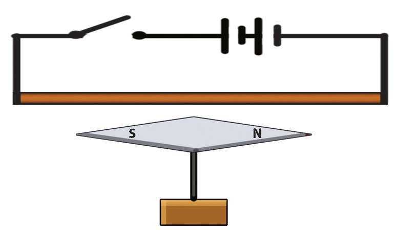
Figure fig_ch04_p085_01 (Page 85)
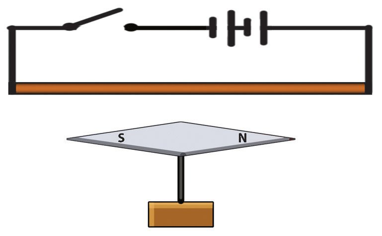
Figure fig_ch04_p085_02 (Page 85)
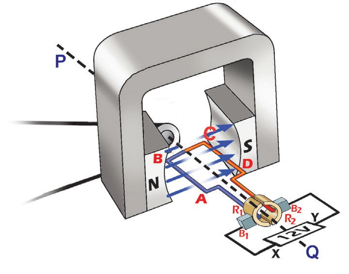
Figure fig_ch04_p085_03 (Page 85)
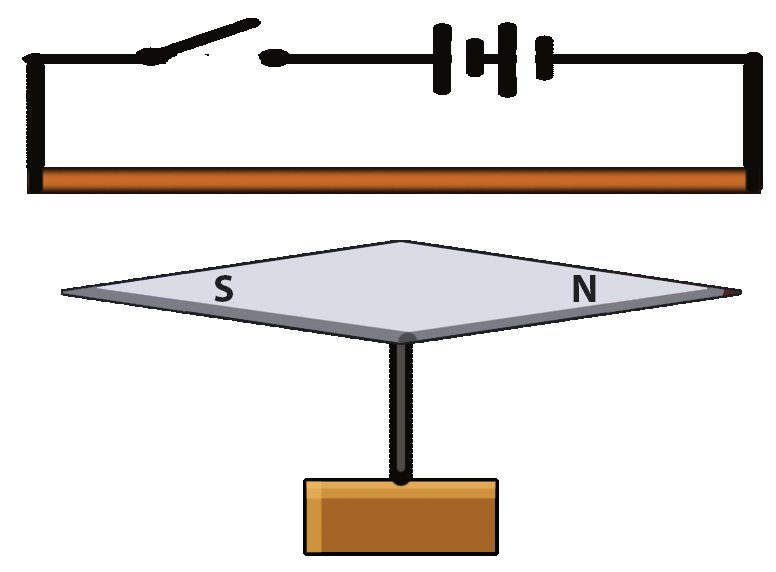
Figure fig_ch04_p085_04 (Page 85)
Magnetic Effect of Electric Current
3.
Choose the correct statement regarding the magnetic polarity of a current carrying
solenoid and write it down
a) If the current in one end of the solenoid is clockwise, then that end is north pole.
b) If the current in one end of the solenoid is clockwise, then that end is south pole.
c) If the current in one end of the solenoid is anticlockwise, then that end is south
pole.
d) None of the above.
4.
Observe the diagram.
a) Identify the device shown in the diagram.
b) To rotate the armature in a clockwise direction,
which terminal of the battery should be
connected to the point X?
c) What is the necessity of using a split ring
commutator in this device?
5.
Fig. 4.32
What is the function of the diaphragm in a moving coil loudspeaker?
a) To amplify sound signals.
b) To convert mechanical energy into sound waves.
c) To separate high frequency sound signals.
d) To increase the strength of the magnetic field.
6.
A conductor is held above and parallel to a magnetic
needle.
a) What causes the magnetic needle to deflect when the
switch is turned on?
b) Suggest two ways to reverse the direction of this
deflection.
Fig. 4.33
7. Observe the diagrams [Fig. 4.34 (a), (b)].
a) In both cases, does the
north pole of the magnetic
needle deflect clockwise
or anticlockwise, when the
switch is turned on?
b) Justify your answer.
AB is a copper wire. An acrylic sheet is kept
above the south pole of a magnet. Two copper
wires are placed above the sheet in such a way
that they are parallel. A battery and a switch
are connected to the wires. AB is placed above
them.
a) In which direction will the copper wire roll
when the switch is turned on?
Fig. 4.35
(towards Q / towards P)
b) What happens if the direction of the current
is reversed?
9. Observe figure 4.36.
a) Identify the device shown in the schematic
diagram.
Fig. 4.36
b) What is its working principle?
c) What is the energy conversion taking place in this device?
d) Name the labelled parts.
e) Name another device that works on the same principle.
10. A wooden block contains mercury between the north and south poles. A freely
rotating toothed wheel is in contact with the mercury. When an electric current is
passed through the wheel,
a) in which direction is the wheel rotating?
12 V
(clockwise direction / anti clockwise direction)
b) Justify your answer.
Barlow’s wheel
Fig 4.37
1.
2.
86
Construct and operate a device to prove the principle of a motor using two permanent
magnets, a piece of copper wire, conducting wires, and a cell.
Dismantle a scrap loudspeaker. Identify its parts and arrange them on a paper with
labels. Explain why the voice coil in it is very thin.
Page 87
CONSTITUTION OF INDIA
Part IV A
FUNDAMENTAL DUTIES OF CITIZENS
ARTICLE 51 A
Fundamental Duties- It shall be the duty of every citizen of India:
(a) to abide by the Constitution and respect its ideals and institutions,
the National Flag and the National Anthem;
(b) to cherish and follow the noble ideals which inspired our national struggle
for freedom;
(c) to uphold and protect the sovereignty, unity and integrity of India;
(d) to defend the country and render national service when called upon to do so;
(e) to promote harmony and the spirit of common brotherhood amongst all the
people of India transcending religious, linguistic and regional or sectional
diversities; to renounce practices derogatory to the dignity of women;
(f) to value and preserve the rich heritage of our composite culture;
(g) to protect and improve the natural environment including forests, lakes, rivers,
wild life and to have compassion for living creatures;
(h) to develop the scientific temper, humanism and the spirit of inquiry and reform;
(i)
to safeguard public property and to abjure violence;
(j) to strive towards excellence in all spheres of individual and collective activity
so that the nation constantly rises to higher levels of endeavour and
achievements;
(k) who is a parent or guardian to provide opportunities for education to his child or,
as the case may be, ward between age of six and fourteen years.